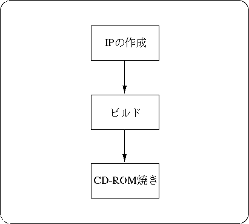
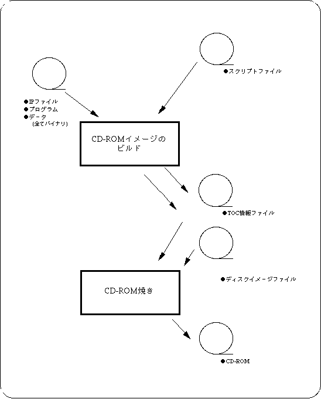

★SGL User's Manual
★データの受け渡し
★SGL User's Manual
★データの受け渡し
この章では、ユーザが作成したゲームをCD-ROMに焼き付ける方法について説明します。

図3-2 CD-ROM作成の流れとファイル

| 構 造 | サイズ | 備 考 | ||
|---|---|---|---|---|
| IP | Boot Code |
System ID | 100H | ゲーム名、商品番号、バージョン等 |
Security Code | D00H | セキュリティコード | ||
Area Code | 20H〜100H | エリアコード | ||
| Aplication Initial Program |
20H〜71E0H | イニシャルプログラムやファイルシステム等 | ||
Disc sample.dsk
Session CDROM
LeadIn MODE1
EndLeadIn
SystemArea e:\ip.bin
Track MODE1
Volume ISO9660 sample.pvd ボリューム記述子集合の、指定部分です。
PrimaryVolume 0:2:16 太字部分は出力される、基本ボリューム
EndPrimaryVolume 記述子です。
EndVolume
File ASAMPLE.BIN
FileSource e:\mode1\asample.bin この４行で、１ファイル分です。
EndFileSource
EndFile
File ASAMPLE1.BIN
FileSource e:\mode1\asample1.bin
EndFileSource
EndFile
File ASAMPLE2.BIN
FileSource e:\mode1\asample2.bin
EndFileSource
EndFile
............ ファイルが続く場合は、同様に追加します。
PostGap 150 EndTrack
Track CDDA この５行で、CDDA１曲分となります。
Pause 150
FileSource e:\cdda\samp_cd1.dat
EndFileSource
EndTrack
Track CDDA
Pause 150
FileSource e:\cdda\samp_cd2.dat
EndFileSource
EndTrack
Track CDDA
Pause 150
FileSource e:\cdda\samp_cd2.dat
EndFileSource
EndTrack
............ 曲が続く場合は、同様に追加します。
LeadOut CDDA CDDAを入れない指定はできなせん。
Empty 500
EndLeadOut
EndSession
EndDisc
segacdw [-s #] [-i #] [-t] プロジェクト名
-s … 書き込み速度を指定します。
１（等速）、２（倍速）、４（４倍速）のいずれかを指定します。
デフォルトは４倍速です。
-i … CDライターのSCSI ID番号を指定します。
デフォルトは５です。
-t … テストモードでは、書き込みテストを行います。
（実際のCD-ROMには書き込まれません。）
★SGL User's Manual
★データの受け渡し